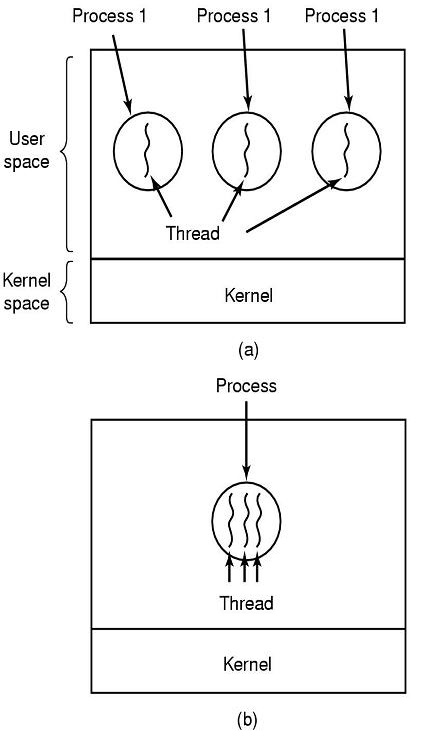

Cada processo (aplicação) no Mac OS X é composto de um ou mais threads, cada uma delas representa um único caminho de execução através do código do aplicativo, que é iniciado com um único segmento e executa sua função principal.
Quando um aplicativo gera um novo segmento, ele se torna uma entidade independente dentro do espaço do aplicativo e processo. Cada segmento tem sua própria pilha de execução e está prevista para tempo de execução separadamente pelo kernel. Um segmento pode se comunicar com outros segmentos e outros processos, podem realizar outras operações de I/O, e fazer qualquer outra coisa que você pode precisar fazer. Porque eles estão dentro do mesmo espaço de processo.
